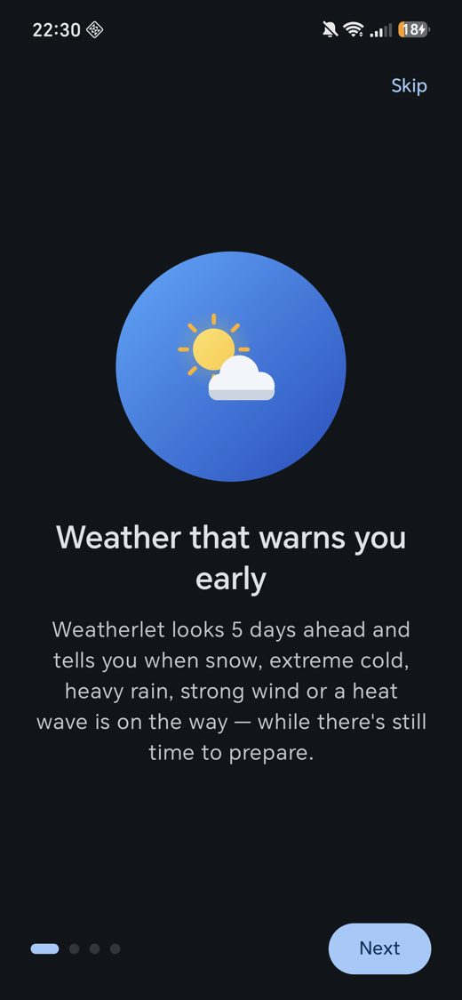
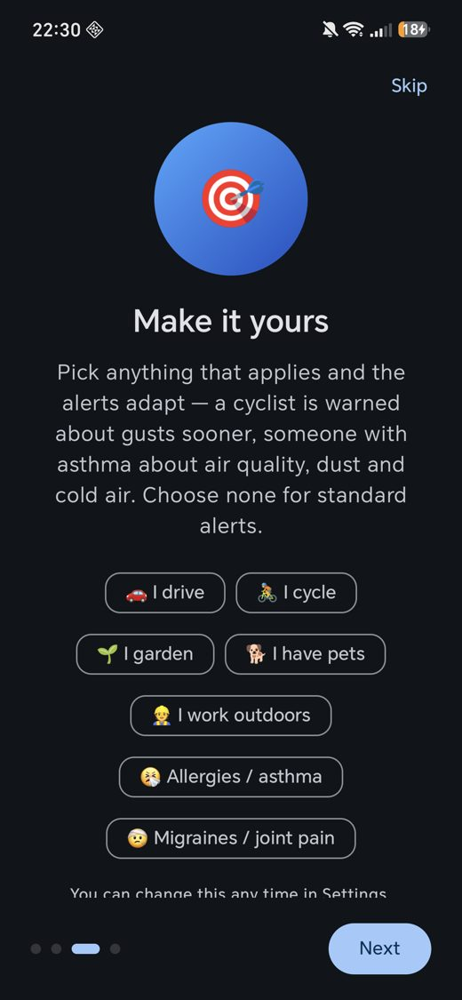
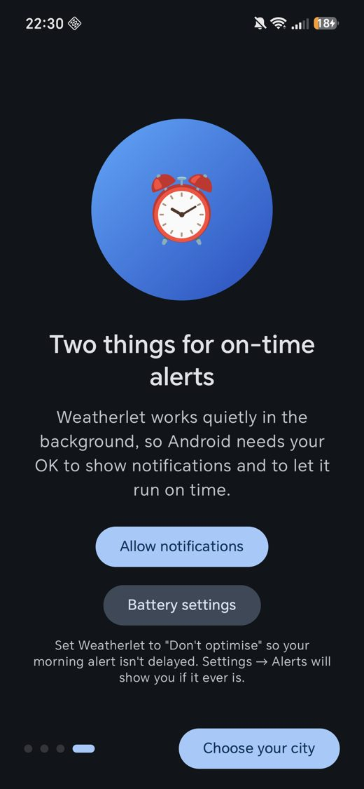

Weatherlet watches the next 5 days for snow, extreme cold, heavy rain, strong wind and heat waves, and tells you while there's still time to prepare. Free, open source, no account, no ads.
Download for Android View sourceAndroid 8.0 or newer · about 3.5 MB · signed APK, direct download (not on Google Play yet)



A single notification each day, only when something is coming. If the forecast gets worse, you hear about it; if it clears, it says so.
Pick profiles (driver, cyclist, gardener, pets, outdoor work, allergies and asthma, migraines) and the alerts get more sensitive where it matters to you.
UK Met Office, US National Weather Service and European MeteoAlarm warnings appear beside the app's own forecast alerts.
A 5-day outlook with alert chips, a next-alert tile, and an hourly strip. Tap a day to jump straight to its details.
If your 6 am alert fires without internet, it uses the last forecast and says how old it is, or tells you honestly when it's too old to trust.
Every alert comes with tick-off tasks tailored to your profile, plus best-day-for-the-job planning and a rain-soon nudge.
Optionally follow your approximate location as you travel. City-level only, never exact, and off by default.
No accounts, analytics or ads. Your places and settings stay on your phone. Read the policy.
Forecasts for anywhere in the world from Open-Meteo, in °C or °F, 12-hour or 24-hour time.
Updates: install a newer APK over the old one; your places and settings are kept. Every release is signed with the same key.
Forecasts and air quality: Open-Meteo.com (CC BY 4.0). Official warnings: UK Met Office, US National Weather Service and MeteoAlarm. El Niño status: NOAA Climate Prediction Center. Alerts are generated on your phone from forecast data; they are not issued by any weather service. Weatherlet is an information tool, not a safety service: always follow official guidance.